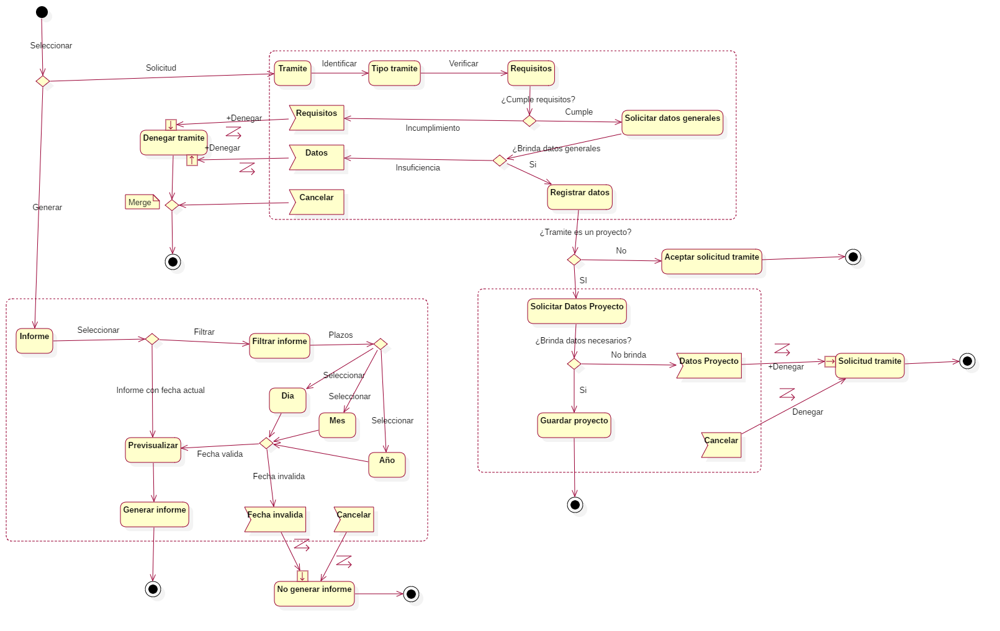
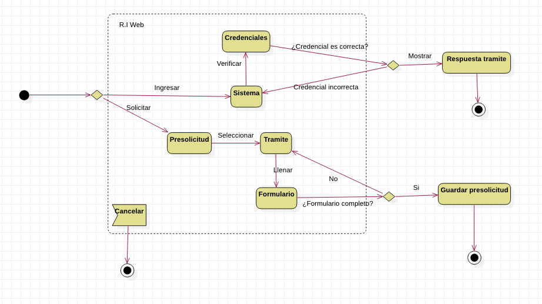

Diagrama

Explicación
Región Interrumpibles
| Región Interrumpible | Tramite |
|---|---|
| Actividades Contenidas | Tramite, Tipo tramite, Requisitos, Solicitar datos generales, Registrar datos. |
| Causas | Cancelar: El usuario del sistema cancela operación.Datos: El usuario desconoce los datos generales necesarios para solicitar un tipo de tramite.Requisitos: El solicitante no cumple con los requisitos necesarios para solicitar un tipo de tramite. |
| Referencia | Usuario del sistema: Secretariado o Jefatura. |
| Región Interrumpible | Informe |
|---|---|
| Actividades Contenidas | Informe, Filtrar informe, Dia, Mes, Año, Previsualizar, Generar Informe. |
| Causas | Cancelar: El usuario del sistema cancelar operación.Fecha Inválida: El usuario del sistema asigno una fecha invalida para generar informe. |
| Referencia | Usuario del sistema: Secretariado o Jefatura |
| Región Interrumpible | Proyecto |
|---|---|
| Actividades Contenidas | Solicitar Datos Proyecto, Guardar Proyecto. |
| Causas | Cancelar: El usuario del sistema cancelar operación.Datos Proyecto: El cliente no brinda los datos necesarios para guardar proyecto. |
| Referencia | Usuario del sistema: Secretariado o Jefatura. |
Actividades
Actividades contenidas en la Región interrumpible: Tramite
| Actividad | Proposito |
|---|---|
| Tramite | Iniciar proceso de solicitud de tramite. |
| Tipo Tramite | Identificar el tipo de tramite que se esta solicitando por el cliente. |
| Requisitos | Verificar que se cumplen los requisitos necesarios para el tipo de tramite que se desea solicitar. |
| Solicitud datos generales | Si se cumplen los requisitos se solicitan los datos generales. |
| Registrar Datos | Si el cliente brinda los datos generales que son requeridos registra los datos de la solicitud en la base de datos. |
Actividades contenidas en la Región interrumpible: Proyecto
| Actividad | Proposito |
|---|---|
| Solicitar datos proyecto | Si el tramite es un proyecto se solicitan los datos del mismo. |
| Guardar Proyecto | Si se brindan los datos necesarios del proyecto este se guarda en la base de datos y se acepta la solicitud de tramite. |
Actividades contenidas en la Región interrumpible: Informe
| Actividad | Proposito | Referencia |
|---|---|---|
| Informe | Mostrar al usuario las opciones contenidas en la generación de informes. | Pre visualizar informe, Filtrar informe. |
| Filtrar informe | Mostrar al usuario los plazos con los que se puede generar informes. | Día, Mes, Año. |
| Dia | Se pueden generar informes según los registros de un día especifico. | |
| Mes | Se pueden generar informes según los registros de un mes especifico. | |
| Año | Se pueden generar informes según los registros de un año especifico. | |
| Previsualizar | Mostrar una vista previa del informe a generar, si se ha seleccionado un filtro mostrará el resultado según la selección, si no hay ningún filtro previo el informe se genera con la fecha actual. | |
| Generar Informe | Generar informe y guardarlo como archivo local en formato .xls o .pdf. |
Actividades no contenidas en ninguna Región interrumpible
| Actividad | Proposito | Referencia |
|---|---|---|
| Si el tramite no es un proyecto se acepta la solicitud de tramite. | ||
| Denegar | Rechazar solicitud de usuario en caso de que ocurra una excepción. | Datos proyecto, cancelar. |
| No generar informe | No generar informe en caso de que ocurra una excepción. | Cancelar, Fecha invalida. |
Sistema web

Región Interrumpibles
| Región interrumpible | Web |
|---|---|
| Actividades contenidas | Credenciales, Sistema, Pre solicitud, Tramite, Formulario. |
| Causas | Cancelar: El usuario cancela operación. |
Actividades
Actividades contenidas en la región interrumpible: Web
| Actividad | Proposito | Referencia |
|---|---|---|
| Sistema | Opción de ingreso al sistema. | |
| Credenciales | Solicitar las credenciales al usuario, que corresponden a su numero de cedula y numero de recibo del tramite solicitado. | |
| PreSolicitud | Opción de presolicitar un tramite. | Las presolicitudes son datos generales del usuario y de los tramites para hacer efectiva la solicitud se debe acudir a la oficina de urbanismo. |
| Tramite | El usuario debe seleccionar un tipo de trámite que desea presolicitar. |
Actividades no contenidas en ninguna Región interrumpible
| Actividad | Propósito |
|---|---|
| Respuesta tramite | Muestra si un tramite previamente solicitado ya esta disponible para retirarse en a oficina de urbanismo. |
| Guardar presolicitud | Guardar los datos del usuario y tipo de tramite. |